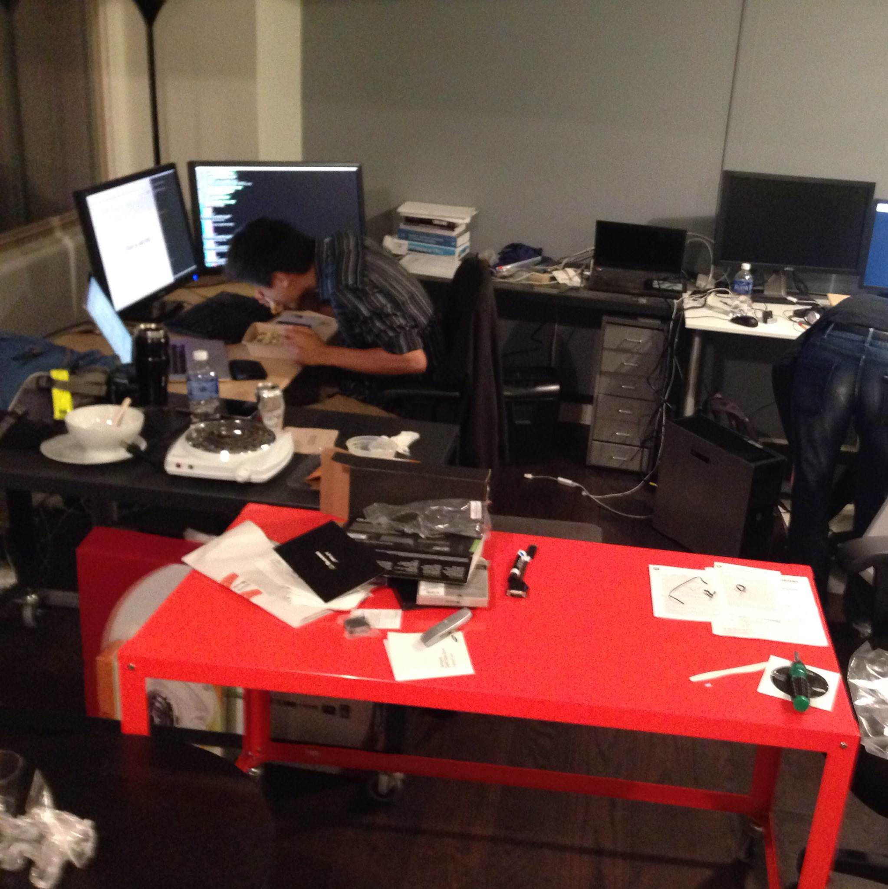
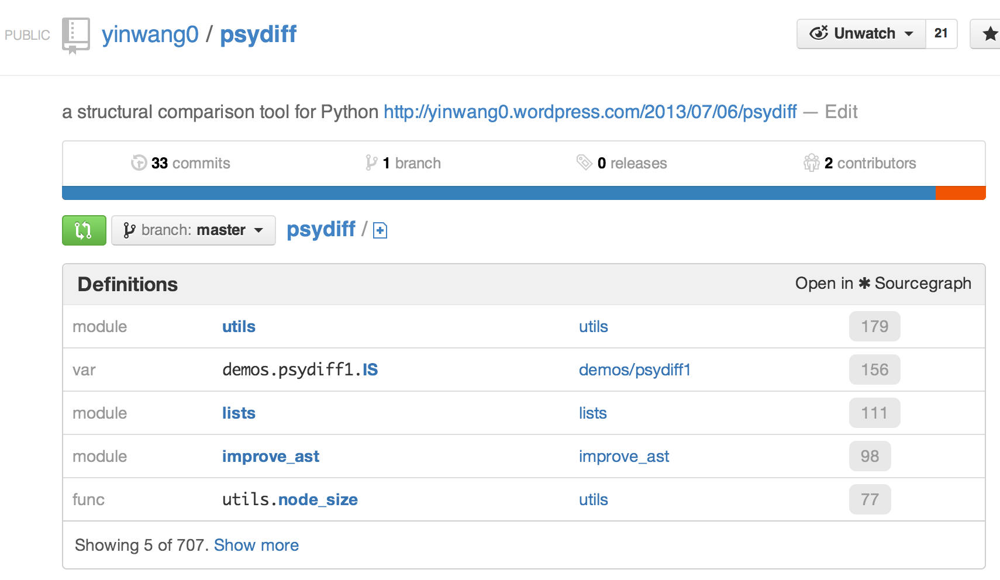
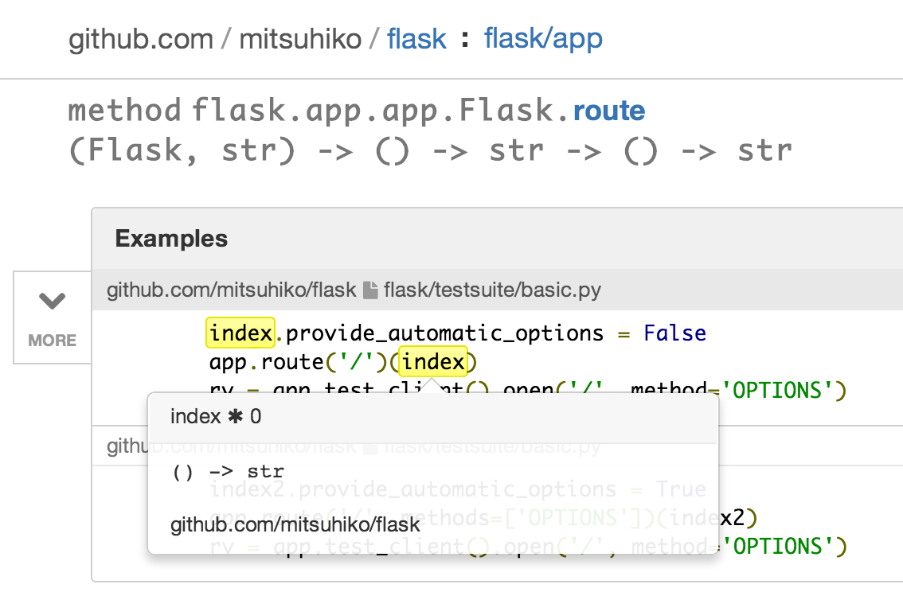

è¿ä¸ªææä¸æå°±æ£å¼å å ¥ Sourcegraph äºãåèªå·±æå ´è¶£çä¸è¥¿çæ¯ä¸æè§ç´¯ãè¿é没æ人æ¯èæ¿ï¼æ¯ä¸ªäººé½æ¯èæ¿ï¼æ¯ä¸ªäººé½åå¾ä¸éç代ç ãè½ç¶æ¯å¤©å·¥ä½çæ¶é´æ¯èµ·å¨ Voxer å¤äºå¾å¤ï¼ä½æ¯æè§ä¹å¥½äºå¾å¤ãQuinn å Beyang æ¯å¤©é½å·¥ä½å°åå¤ï¼ä½æ¯ä»ç¶æ¯å¤©ç²¾ç¥é¥±æ»¡ãææ¯ä»ä»¬ç¨å¾®å·æä¸äºãå·¥ä½ä¸æ¯å 为æååï¼èæ¯æä¸ç§åæçµç©ä¸æ ·çâç¾âï¼è¿æ ·çå·¥ä½è¿è½å«å·¥ä½åï¼é£å«âç©ç©ä¸ä¸§å¿â :-)
æ们çæ¡ä»¶æ¯è°è¦çï¼åå ¬å®¤åå°åä¹±ãè½ç¶æ¡ä»¶å¾å¿«å°±ä¼æ¹åï¼æå´ä¸ç¹ä¹ä¸å¨ä¹è¿ä¸ªãSteve Jobs ä¸ä¹æ¯å¨è½¦åºéåé äº Apple åï¼è¿æåæ¯ä¸ª startup åãæ们çç®æ æ¯ï¼ç²¾ç¡®çï¼æè¯ä¹çæç´¢å ¨ä¸çç代ç ï¼æ为ç¨åºè¯è¨çç Googleã

(ä¸å¾ä¸ºæ们ç co-founder å CTO Beyang åå¦ï¼ä»é常è½åï¼å°ç®±éçå©èé½æ¯ä»åæçãè¿åä¸é¥±å°±æ¿çµçç ®æ³¡é¢ãï¼
Sourcegraph çç³»ç»çé¢åå¾ç¸å½å¹²åå好ï¼æ以æ¥å°è¿éç第ä¸å¤©ï¼æ就已ç»æåçæ PySonar2 å å ¥å°äº Sourcegraph éé¢ï¼å¹¶ä¸æ¹è¿äº PySonar2 çå¾å¤ä»£ç ãä¸ä¹ ä½ å°±å¯ä»¥å¨ sourcegraph.com ä¸é¢çå°ä½ ç GitHub Python 代ç çç±»åãæè¿ä¼æ PySonar2 移æ¤ç» Ruby åå ¶ä»ä¸äºè¯è¨ã
å¦å¤ï¼ææ¨è Quinn å Beyang ä¸å¤©ä¹é´ååºæ¥çå°ç©æï¼sourcegraph ç Chrome æ件ãå®è£ ä¹åï¼å½ä½ æµè§ GitHub ç repo çæ¶åï¼å°±ä¼èªå¨æ¾ç¤ºåº Sourcegraph ä¸ºä½ ç´¢å¼åºçå¼ç¨æ¬¡æ°æå¤çé£äºä»£ç ï¼

PySonar2 å ¶å®å ·æä¸ç§é常强大çç±»åç³»ç»ï¼å å«äº intersection type, union type çç±»åï¼è¿äºé½æ¯ Java, Haskell, OCaml çè¯è¨ä¸å ·æççµæ´»è强大çç±»åãPySonar2 ä¹å¯ä»¥æ¨å¯¼åºé«é¶å½æ°ç±»åã
æ¯å¦ä¸é¢è¿ä¸ªä¾åæ¯ Flask æ¡æ¶ç route å½æ°ï¼æ¾ç¤ºå¨æä¿®æ¹è¿çæ¬å° Sourcegraph ç½ç«ä¸ï¼ï¼

PySonar2 æ¨å¯¼åºå®çç±»åæ¯ï¼
(Flask, str) -> (() -> str) -> () -> str
è¿éæ¯ä¸ä¸ªé«é¶å½æ°ï¼å®è¡¨ç¤ºï¼ route æ¥åä¸ä¸ª Flask  对象 (self) åä¸ä¸ª strï¼ç¶åçæä¸ä¸ªä¸é´å½æ°ãè¿ä¸ªå½æ°æ¥åå¦ä¸ä¸ªå½æ°ï¼ç±»å为 () -> strï¼ï¼ç¶ååçæä¸ä¸ªå½æ°ãè¿ä¸ªå½æ°è¢«è°ç¨ä¹åï¼ä¼è¿åä¸ä¸ª strãè¿å°±æ¯ä¸ºä»ä¹ä½ å¯ä»¥è¿æ ·è°ç¨å®ï¼
app.route('/')(index)
å ¶ä¸ index å½æ°çç±»åæ¯ () -> strï¼å¦å¾æ示ï¼ãå®ä¸æ¥ååæ°ï¼è¿åä¸ä¸ª strã
ç®åè¿ä¸ªåè½è¿ä¸å¨ä¸»ç½ç«ä¸é¢ãçå®å ¨è°è¯éè¿åï¼ä¸ä¹ å°±ä¼æ¾å°ä¸é¢ã